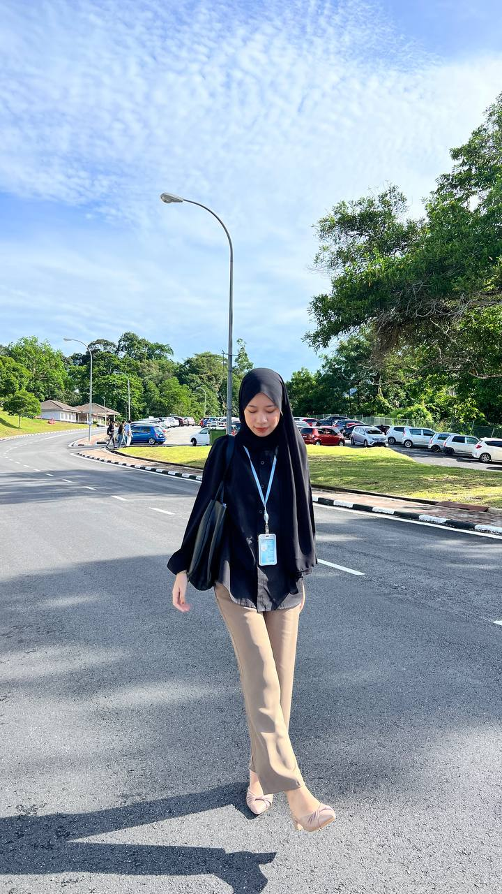
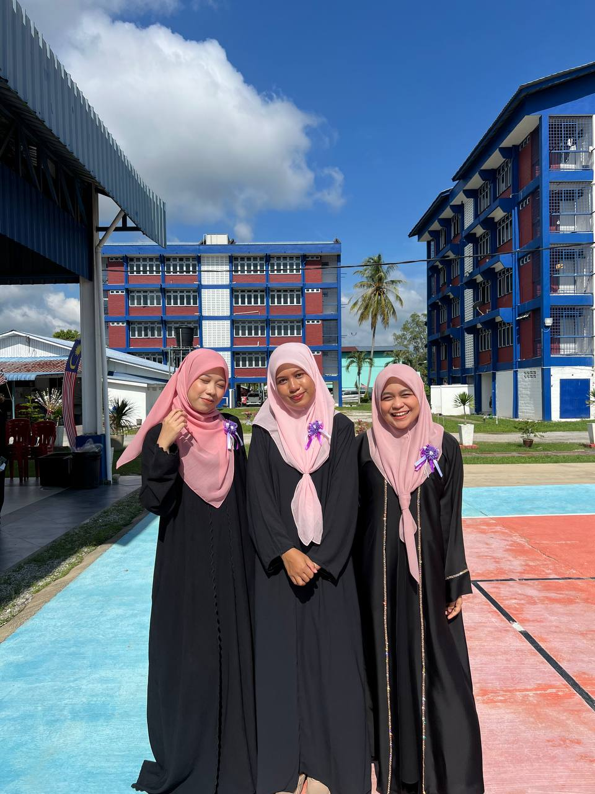
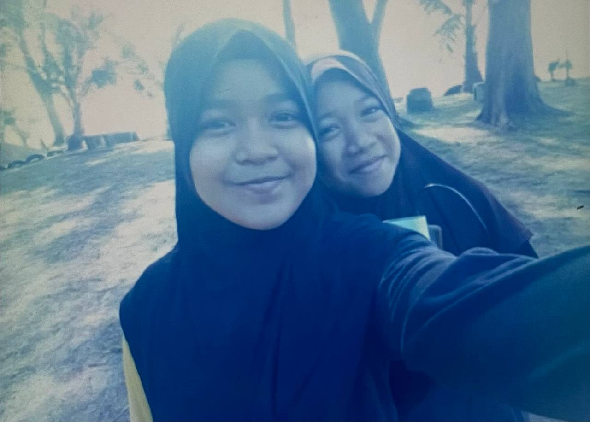

2023 – Present
UNIVERSITY STUDENT
Studied at UiTM Campus Machang
Currently studying and building academic, communication, and leadership skills.

July-September 2025
INTERNSHIP
Had an internship at The District Police Headquarters Of Pasir Puteh
Worked on community programs and developed teamwork & organisation experience.

2017
SCHOOL CAMPING
Camping in a military camp for 3 days
Participated in adventure school camp involving teamwork and extreme activities.
 2025
2025
SMALL BUSINESS
Selling ice cream to completed an assignment
Selling Malaysian ice cream at affordable prices to all students